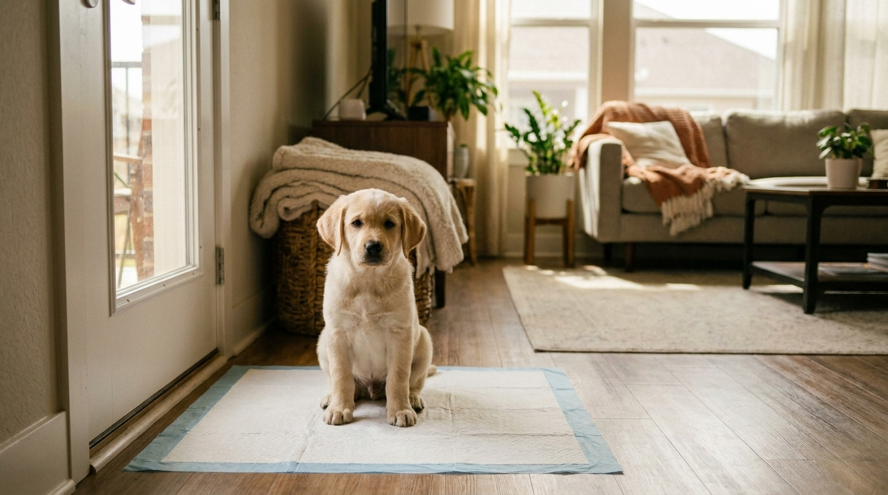

Лужа на ковре в 3 часа ночи, лужа у входной двери, лужа под столом — это не саботаж и не вредность. Щенок физически не может контролировать мочевой пузырь так, как взрослая собака. Это физиология, а не характер. Правильное приучение к туалету строится не на наказаниях, а на понимании возможностей щенка и правильном режиме. Пошаговый план, который работает.
🐾 Питомец ведёт себя странно?
AnimaLife расшифрует поведение кошки и собаки и подскажет, что делать. Попробуйте бесплатно прямо в мессенджере.
Есть простое правило, которое нужно знать каждому владельцу щенка:
Максимальное время удержания = возраст в месяцах + 1 час.
Двухмесячный щенок — 3 часа. Трёхмесячный — 4 часа. Четырёхмесячный — 5 часов. И это максимум, в идеальных условиях: щенок спокоен, не играл и не возбуждён. В реальности, при активной игре или возбуждении, время сокращается вдвое.
Почему так? Сфинктеры мочевого пузыря и прямой кишки у щенков до 4-5 месяцев не до конца развиты нервно-мышечно. Нейронные связи, обеспечивающие произвольный контроль мочеиспускания, формируются постепенно. Щенок буквально не способен «решить» не писать — он писает рефлекторно, когда пузырь наполнился. Полный произвольный контроль формируется к 4-6 месяцам.
Ночью мочевой пузырь работает медленнее — обмен веществ снижается. Большинство щенков в 8-10 недель могут спать без похода в туалет 4-5 часов (ночью, без движения). К 4 месяцам — уже 6-7 часов.
Приучение к туалету на улице — это не «объяснить щенку, что надо терпеть». Это создать режим, при котором щенок всегда оказывается на улице в нужный момент — и таким образом формирует привычку через повторение.
Обязательные моменты выгула:
На практике для щенка 2-3 месяцев это означает 8-12 прогулок в день. Звучит как много — и это действительно большая работа. Но именно плотный режим в первые 2-4 недели — залог быстрого успеха.
Положительное подкрепление — единственный эффективный метод обучения туалету. Схема простая, но требует точности:
Критично важно: между «сделал дело» и «получил награду» должно пройти не более 2-3 секунд. Мозг щенка устанавливает связь «действие — следствие» в очень короткий интервал. Если похвалить через минуту — она уже связана с тем, что щенок делает в этот момент (идёт, смотрит на вас, жуёт травинку), а не с туалетом.
Со временем команда-маркер становится сигналом: вышли на улицу, сказали слово — щенок понимает, что от него ожидается. Это реально работает и существенно ускоряет процесс на прогулках.
Метод «тыкать носом в лужу» — один из самых живучих зоологических мифов. Он не работает и активно вредит по нескольким причинам.
Щенок не понимает, за что его наказывают. Связь между «я сделал лужу 10 минут назад» и «хозяин злится прямо сейчас» щенок провести не может. Его мозг работает в рамках нескольких секунд — не минут. Он понимает только одно: хозяин приходит и злится. Это создаёт генерализованный страх, а не понимание правила.
Щенок начинает прятаться. После нескольких эпизодов наказания щенок приходит к логичному выводу: «когда хозяин видит лужу — мне плохо». Решение — делать лужу там, где хозяин не видит: за диваном, под кроватью, в углу. Теперь хозяин находит «сюрпризы» в неожиданных местах — именно это чаще всего и происходит в домах, где применяли наказания.
Страх тормозит обучение. Стресс и тревога снижают способность к обучению у собак так же, как у людей. Щенок в страхе не учится новым правилам — он учится избегать угрозы. Позитивный опыт создаёт нейронные связи быстрее и прочнее.
Что делать, если застали за процессом: спокойно, без крика, прервать и быстро вынести на улицу. Без наказания. Если лужа уже есть — просто убрать энзимным средством без комментариев.
Оба подхода работают, у каждого свои плюсы и минусы.
Сразу улица (без пелёнок в доме):
Пелёнки в доме + постепенный переход на улицу:
Для большинства хозяев, живущих в квартире с удобным выходом на улицу, оптимален вариант «сразу улица» с максимально плотным графиком первые 2-3 недели.
Ночь — самый сложный период для хозяев. Щенок в 2 месяца физически не может проспать 7-8 часов без похода в туалет.
Практические решения:
К 3-4 месяцам большинство щенков начинают спать всю ночь без похода на улицу — при условии, что дневной режим выстроен правильно.
«Аварии» — часть процесса, не исключение. Задача хозяина — минимизировать их частоту режимом и правильно убирать, чтобы не формировать «постоянное место».
Реалистичные ожидания:
На сроки влияют: порода (мелкие породы приучаются труднее и дольше — меньший мочевой пузырь), темперамент, насколько последовательно хозяин придерживается режима, и был ли у щенка предыдущий опыт (щенки из зоомагазинов с клеточным содержанием часто привыкли делать дела прямо там, где живут — это усложняет задачу).
Если щенок уже 4-5 месяцев, режим выстроен, а частые «аварии» продолжаются — нужно исключить медицинские причины:
Если с режимом всё правильно, а прогресс не идёт — к ветеринару с анализом мочи. Это недолго и дёшево, но исключает медицинскую причину.
🐾 Здоровье питомца под контролем
AI-ветеринар, дневник здоровья и персональные советы для вашего питомца — установите AnimaLife бесплатно.
Для хозяев, живущих на высоких этажах без лифта, плотный режим выгула становится физически трудной задачей — 10 поездок на улицу в день с маленьким щенком. Несколько практических решений:
Отдельная задача, которую многие игнорируют: щенок ходит в туалет только в «своём» месте во дворе или только без поводка. Это создаёт проблемы в путешествиях, на выставках, в незнакомых местах.
Приучение к туалету на поводке начинается с первых прогулок. Не отстёгивайте поводок сразу — сначала дайте сделать дело на поводке, похвалите, потом разрешайте свободу. Так туалет «на поводке» становится таким же нормальным, как и без него.
Если щенок уже зафиксировал только одно место: постепенно переносите прогулку — каждый раз чуть дальше от привычного пятна, пока не сформируется гибкость.